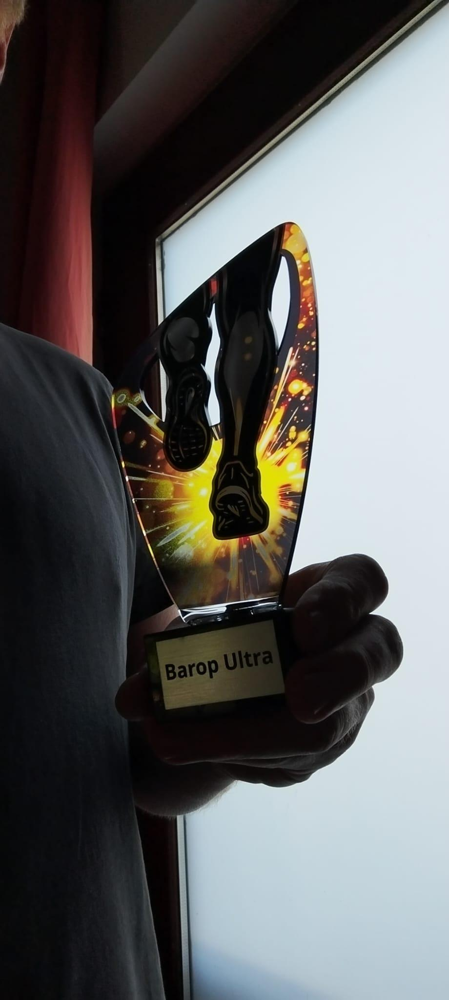

Mitmachen
Ich bin dabei.
Schreib Lars eine kurze Mail – Name, fertig. Oder sag' einfach Bescheid.
Jetzt Teilnahme ankündigenna dann ... los!
Ein Backyard Ultra. In der Nachbarschaft. Für alle, die aufhören wollen – aber dann doch nicht.
13. September 2026 · 12:00 UhrDas Konzept
Beim Backyard Ultra gibt es keine feste Distanz. Stattdessen startet jede Stunde ein neuer Loop – und wer die Runde nicht rechtzeitig schafft oder aufgibt, scheidet aus. Gewonnen hat am Ende die Person, die als einzige die letzte vollständige Runde beendet hat.
Damit das nicht ewig bis in die Nacht läuft, ist bei diesem Event spätestens nach der fünften Runde Schluss. In diesem Fall hat die Person gewonnen, welche die fünfte Runde am schnellsten läuft.
Wie Du ankommst? Das ist egal. Hauptsache Du bist dabei. Damit wir zusammen eine schöne Zeit haben.
Noch eine Runde? Na dann ... los!
Strecke & Ort
Der Start- und Zielpunkt befindet sich in der Hugo-Heimsath-Straße. Die Strecke führt durch den Umweltkulturpark zum Rüpingsbach nach Menglinghausen zum Friedhof, dahinter wieder hoch über die Stockumer Straße, Am Gardenkamp runter in den Eichlinghofener Wald und dann die Universitätsstraße runter und am Sportgelände der Uni vorbei zurück zum Start.
Mental anspruchsvoll: Genau auf der Hälfte der Strecke ist der Start/Ziel-Bereich nur ein paar Schritte entfernt. An dieser Stelle wäre das Aufgeben besonders verlockend...
Streckenmarkierungen sind ausgeschildert.
img src="images/Streck.png" width="400">
Strecke im neuen Fenster öffnen!
Spielregeln
Fragen & Antworten
Muss ich ein Profi sein?
Absolut nicht. Das Tempo entscheidest du selbst – solange du unter 60 Minuten pro Runde bleibst. Probiere die Strecke mal gaaaanz langsam aus. Du wirst überrascht sein!
Was passiert, wenn ich aufhöre?
Nichts Schlimmes. Du wirst von der Nachbarschaft angefeuert, bekommst etwas zu essen und kannst zusehen, wie die anderen weitermachen.
Was soll ich mitbringen?
Laufschuhe, Wettergerechte Kleidung, ausreichend Snacks und Getränke für dich, und gute Laune.
Was kostet die Teilnahme?
Garnix. Außer Deine Freuden- oder Verzweiflungstränen. Eine Ankündigung Deiner Teilnahme ist trotzdem sehr hilfreich für die Planung.
Mitmachen
Schreib Lars eine kurze Mail – Name, fertig. Oder sag' einfach Bescheid.
Jetzt Teilnahme ankündigen
Verantwortlich für den Inhalt dieser Website:
Lars
E-Mail: lars.metzger@posteo.de
Diese Website ist ein privates, nicht-kommerzielles Angebot zur Organisation einer Nachbarschaftsveranstaltung. Es werden keine personenbezogenen Daten gespeichert oder weitergegeben.